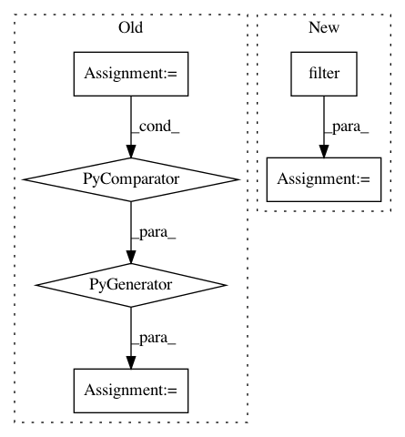

a2e45b8fdde315b756691b4ae573ad55f55dc002,homeassistant/components/history.py,,get_significant_states,#Any#Any#Any#,39
Before Change
as well as all states from certain domains (for instance
thermostat so that we get current temperature in our graphs).
where =
(domain IN ({}) OR last_changed=last_updated)
AND domain NOT IN ({}) AND last_updated > ?
.format(",".join(""%s"" % x for x in SIGNIFICANT_DOMAINS),
",".join(""%s"" % x for x in IGNORE_DOMAINS))
data = [start_time]
if end_time is not None:
After Change
(states.last_updated > start_time)))
if end_time is not None:
query = query.filter(states.last_updated < end_time)
if entity_id is not None:
query = query.filter_by(entity_id=entity_id.lower())
states = (
state for state in recorder.execute(
query.order_by(states.entity_id, states.last_updated))
In pattern: SUPERPATTERN
Frequency: 3
Non-data size: 6
Instances
Project Name: home-assistant/home-assistant
Commit Name: a2e45b8fdde315b756691b4ae573ad55f55dc002
Time: 2016-07-02
Author: rhooper@toybox.ca
File Name: homeassistant/components/history.py
Class Name:
Method Name: get_significant_states
Project Name: AlexsLemonade/refinebio
Commit Name: 99d2d1aced54a9673b9e25b6c1f992acd20535e1
Time: 2019-08-16
Author: arielsvn@gmail.com
File Name: common/data_refinery_common/rna_seq.py
Class Name:
Method Name: should_run_tximport
Project Name: pantsbuild/pants
Commit Name: a5be64f57a268a23db5267cd7526d67c13a6bc66
Time: 2013-11-20
Author: jsirois@twitter.com
File Name: src/python/twitter/pants/tasks/cache_manager.py
Class Name: CacheManager
Method Name: _order_target_list